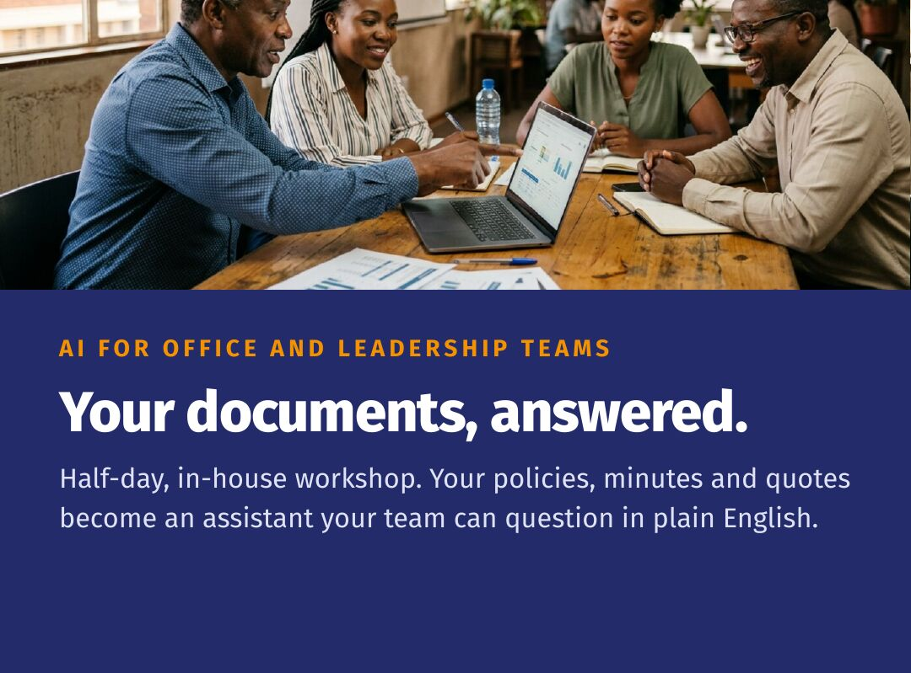

Organisational · AI for office and leadership teams
Your documents, answered.
Half-day, in-house workshop. Your policies, minutes and quotes become an assistant your team can question in plain English.
What one session delivered
“Three supplier quotes plus our procurement policy became a scored comparison and a board-ready evaluation report in under 15 minutes.”
Live demonstration with a Harare land development leadership team. Participants estimated the same work normally takes hours or days.
Who it’s for
- Land developers, NGOs, churches and cooperatives
- School and clinic administration teams
- Any office that runs on documents, email and Excel
Why it works
- We use your documents, not generic examples
- No new software to buy and no ERP to replace
- Every answer links back to the page it came from, so staff can check it